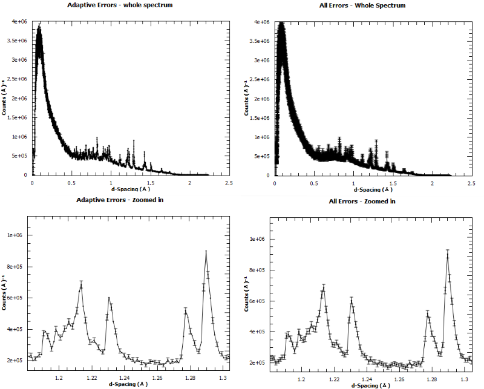
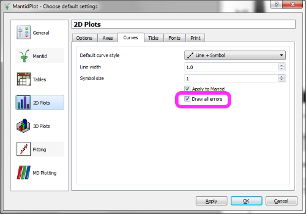
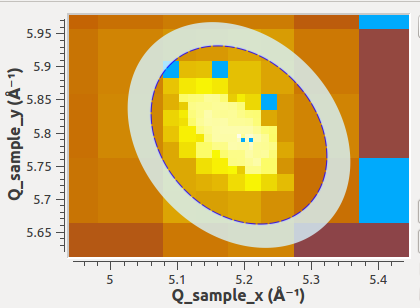
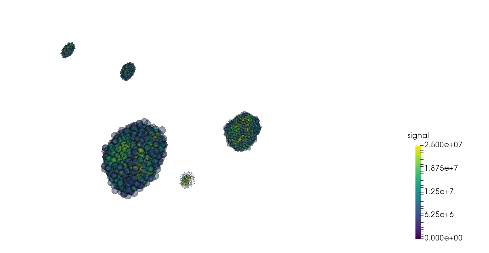
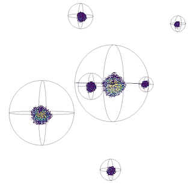

UI & Usability Changes#
User Interface#
Plotting Improvements#
Line plots#
{kind=link}

The default for plotting line plots has been changed to include plotting error bars on every data point. This in general makes more sense than the previous approach of missing some points based on the data density.
However it can make dense data plots with errors look more obscured, so if you preferred the old approach you can change it back by unselecting the option Draw All Errors in the View->Prefences menu.

3D plots from group workspaces#
For single-spectrum data, the choice of spectrum number to plot has been disabled because it has only one possible answer.
SliceViewer Improvements#
The Matlab defulat colour map viridis has been added to Mantid
The SliceViewer is now able to display ellipsoidal peak shapes. Note that the displayed ellipse is the result of the viewing plane cutting the peak ellipsoid.

VSI Improvements#
The representation of points in the splatter plot was changed from opaque cubes to translucent spheres.

The sphere and ellipse wireframes have been simplified so that it is easier to see the enclosed points.

Removed the error-prone right-click option to view peaks workspaces in the VSI. One should load a MDWorkspace, then drag the corresponding peaks workspace into the VSI window.
Instrument View#
The instrument view is now exposed to python as a stand-alone widget. In it’s current implementation, the instrument view depends on the global workspace list in order to load data from workspaces. Example script:
from threading import Thread
import time
import sys
import PyQt4
import mantid.simpleapi as simpleapi
import mantidqtpython as mpy
ConfigService = simpleapi.ConfigService
def startFakeEventDAE():
# This will generate 2000 events roughly every 20ms, so about 50,000 events/sec
# They will be randomly shared across the 100 spectra
# and have a time of flight between 10,000 and 20,000
try:
simpleapi.FakeISISEventDAE(NPeriods=1,NSpectra=100,Rate=20,NEvents=1000)
except RuntimeError:
pass
def captureLive():
ConfigService.setFacility("TEST_LIVE")
# start a Live data listener updating every second, that rebins the data
# and replaces the results each time with those of the last second.
simpleapi.StartLiveData(Instrument='ISIS_Event', OutputWorkspace='wsOut', UpdateEvery=0.5,
ProcessingAlgorithm='Rebin', ProcessingProperties='Params=10000,1000,20000;PreserveEvents=1',
AccumulationMethod='Add', PreserveEvents=True)
#--------------------------------------------------------------------------------------------------
InstrumentWidget = mpy.MantidQt.MantidWidgets.InstrumentWidget
app = PyQt4.QtGui.QApplication(sys.argv)
eventThread = Thread(target = startFakeEventDAE)
eventThread.start()
while not eventThread.is_alive():
time.sleep(2) # give it a small amount of time to get ready
facility = ConfigService.getFacility()
try:
captureLive()
iw = InstrumentWidget("wsOut")
iw.show()
app.exec_()
finally:
# put back the facility
ConfigService.setFacility(facility)
Scripting Window#
If MantidPlot was launched with the -x option but the script was already opened by the recent files list then the wrong script would be executed. This bug has been fixed. #15682
Documentation#
Documentation has been added for fitting functions BSpline and CubicSpline then attempts to be more verbose about their use and how to implement them. The Documentation now contains example images of splines and also concrete equations that describe them #15064
The documentation of several Nexus loading algorithms has been improved with the addition of a table that shows how various items of data move from the Nexus file to the workspace. These algorithms are LoadEventNexus, LoadISISNexus, LoadMcStas, LoadMuonNexus (both versions) and LoadNexusLogs. Also LoadNexus documentation now explains how it determines which load algorithm to run.
The documentation for all calibration approaches has been pulled together, improved and expanded here.
Bugs Resolved#
VSI: Fix Mantid crash when pressing Scale or Cut when “builtin” node is selected in Pipeline Browser
VSI: The TECHNIQUE-DEPENDENT initial view now checks for Spectroscopy before Neutron Diffraction.
A bug was fixed in the Fit property browser where the “Plot Difference” and other checkboxes affected the display of parameter errors. Now only the “Show Parameter Errors” box will control this.
Plots from tables: the axis labels correspond to the data plotted and not just the first two columns.
Plots from tables: the title of the plot is the title of the TableWorkspace rather than the default “Table” (this is useful when several tables and plots are open)
Plots from tables auto-update when the TableWorkspace is replaced in the ADS. If extra rows are added then the new points are added to the graph.
The Fit property browser (Fit Function window) in MantidPlot now supports fitting data plotted from a TableWorkspace.
Multi-dataset fit interface: a bug was fixed in the “edit local parameter” dialog where entering a value and selecting “fix” (for example) would truncate the final digit of the entered value.
Multi-dataset fit interface: a bug was fixed where global parameters would lose their ties when a fit was run or the dataset was changed.
Full list of GUI and Documentation changes on GitHub